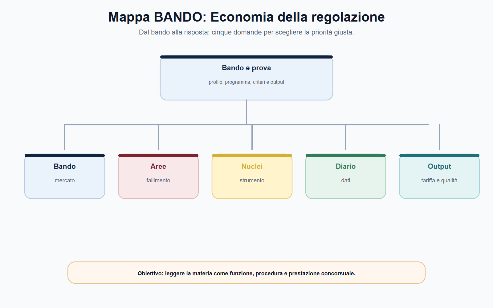
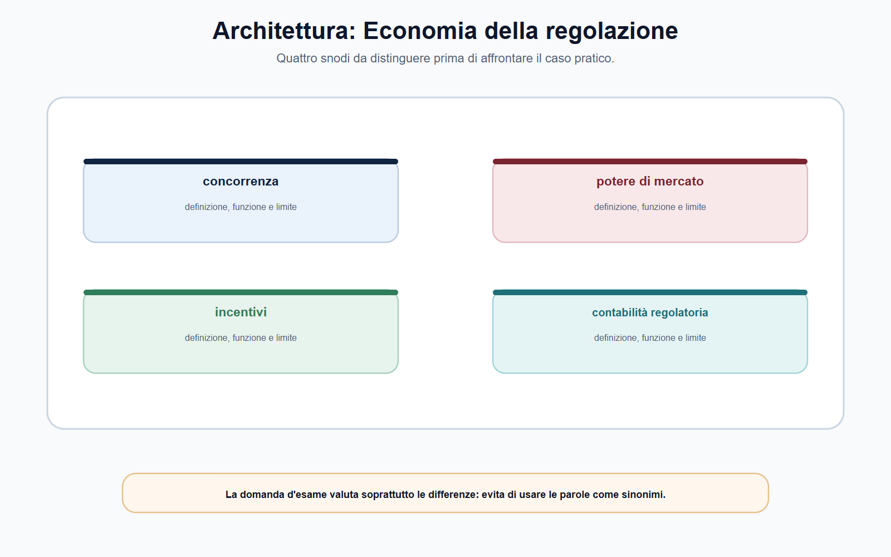
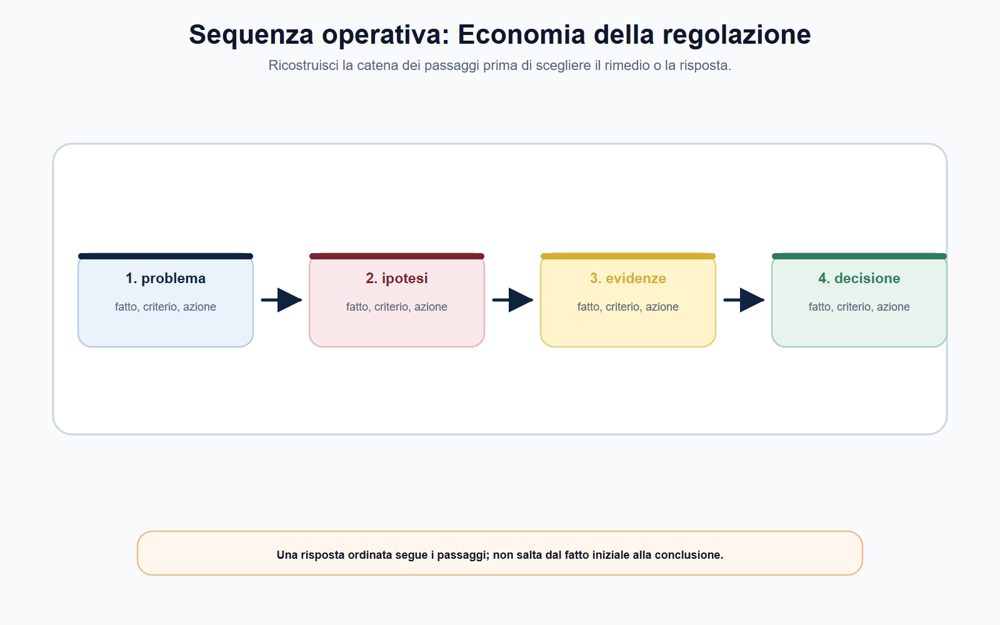
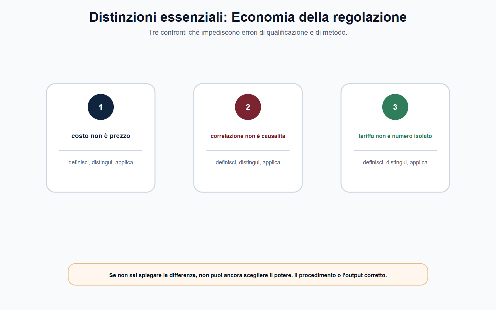

VOL-05 · Capitolo 07
M-FC05
Economia industriale,
regolazione, econometria e contabilità regolatoria
L’economia della regolazione non è una materia separata dal diritto amministrativo. È il linguaggio che spiega perché, in un mercato o in un servizio, una misura possa essere necessaria, adeguata e controllabile. Nessuno strumento decide da sé: tutti devono essere rapportati al caso e alla norma applicabile.
01 · Il problema in prova
Né formule isolate, né atto vuoto
Due errori opposti. Il primo tratta la regolazione come un elenco: price cap, benchmark, costo medio, elasticità, indice di concentrazione. Il secondo la tratta come un atto puramente formale, privo di effetti su incentivi, investimenti, utenti e concorrenti. La risposta efficace tiene insieme fonte e procedimento da un lato; struttura del mercato, dati e conseguenze dall’altro.
Che cos’è
L’economia industriale chiarisce come è organizzato il mercato; l’econometria aiuta a misurare e, quando possibile, a valutare relazioni causali; la contabilità regolatoria rende confrontabili costi, ricavi e trasferimenti nei settori in cui la disciplina la prevede.
A che serve in prova
A leggere un indicatore senza trasformarlo in prova causale, a distinguere bilancio civilistico e conti regolatori, a motivare una misura senza inventare coefficienti o tariffe.
Dato non significa prova conclusiva; modello non significa decisione; contabilità non significa tariffa.
Non partire da un indice, da un prezzo o da una formula. Parti dal potere attribuito all’Autorità e dal problema da risolvere; poi verifica mercato, dati, assunzioni, effetti e limiti del metodo.
02 · BANDO
Cinque decisioni su questo capitolo
«Economia industriale», «regolazione tariffaria», «analisi dei dati» o «valutazione d’impatto» richiedono un collegamento tra concetto, fonte e decisione.
| Che cosa fai | Se la salti | |
|---|---|---|
| B — Bando | Cerca mercato, tariffe, dati, contabilità regolatoria, impatto. | Studi formule staccate dal potere. |
| A — Aree | Collega struttura del mercato, incentivi, econometria e conti di settore. | Confondi concentrazione e prova di potere. |
| N — Nuclei | Mercato rilevante, potere, fallimento, correlazione/causalità, unbundling. | Tratti un indice come decisione. |
| D — Diario | Segna quote autosufficienti, «dopo quindi a causa di», tariffa = bilancio. | Ripeti le tre trappole all’orale. |
| O — Output | Mappa problema–evidenza–intervento, nota metodologica, checklist del perimetro contabile. | Numero senza motivazione. |
03 · Schema
Dal bando alla domanda regolatoria
Prima di nominare un indice, fissi il problema: quale mercato o servizio, quale difetto da dimostrare, quale potere consente di intervenire. Lo schema orienta la lettura della struttura del mercato e separa il perimetro dalle eccezioni.

Cinque domande per scegliere la priorità: non partire dal numero, partire dal bando e dal potere.
04 · Mercato
Struttura, non etichetta di settore
Non basta dire che un settore è «concentrato» o che un’impresa è «grande». Occorre capire quali beni o servizi sono in gioco, quali alternative sono realistiche, quale dimensione geografica è pertinente. Il mercato rilevante individua i vincoli concorrenziali: non coincide automaticamente con il settore amministrativo.
| Concetto | Domanda utile | Rischio |
|---|---|---|
| Mercato rilevante | Quali prodotti, servizi e aree esprimono i vincoli pertinenti? | Farlo coincidere con il settore amministrativo. |
| Concentrazione | Quanti operatori incidono e con quali posizioni? | Trattarla come prova definitiva di potere. |
| Potere di mercato | L’impresa può agire in modo apprezzabilmente indipendente da vincoli effettivi? | Dedurlo da una sola quota. |
| Fallimento del mercato | Quale meccanismo non produce un esito soddisfacente? | Invocarlo senza descrivere il difetto. |
| Interesse regolato | Quale risultato pubblico deve essere protetto? | Confonderlo con il vantaggio di un operatore. |
05 · Architettura
Potere di mercato e incentivi non coincidono
La regolazione agisce su variabili che si condizionano. Un prezzo più basso può migliorare l’accessibilità, ma una disciplina mal costruita può ridurre incentivi a manutenzione e investimenti. Non esiste un parametro astrattamente «giusto» senza contesto.
| Variabile | Domanda di controllo |
|---|---|
| Prezzo | Il dato è comparabile e collegato al perimetro regolato? |
| Costi | Quali costi sono inclusi, con quale criterio e quali evidenze? |
| Qualità | L’indicatore misura realmente l’esito promesso? |
| Investimenti | La misura modifica incentivi o tempi di investimento? |
| Concorrenza | Riduce una barriera o crea una nuova distorsione? |
Quattro snodi: struttura, potere, incentivi e tariffe, dati. Non usarli come sinonimi.

06 · Descrizione
«Dopo la misura i reclami sono diminuiti»
Descrive un andamento. Nello stesso periodo possono essere cambiati domanda, tecnologie, condizioni macroeconomiche, comportamenti, criteri di rilevazione o composizione degli utenti. Successione non è causalità.
06 · Causalità
Che cosa sarebbe accaduto senza l’intervento?
Questa situazione alternativa è il controfattuale. Non è sempre osservabile direttamente: metodo e dati devono essere coerenti con il disegno dell’intervento. Un indicatore affidabile dichiara oggetto, unità, periodo, fonte e criteri di raccolta.
07 · Econometria
Leggere il numero senza subirlo
La quota di mercato è un indizio. Un indice di concentrazione come l’HHI, ottenuto sommando i quadrati delle quote, rende confrontabili strutture diverse e segnala dove approfondire; non dimostra da solo potere di mercato né effetti anticoncorrenziali.
| Domanda | Risposta debole | Controllo minimo |
|---|---|---|
| Il servizio è migliorato? | «L’indice è salito» | Definizione, periodo, popolazione, fonte. |
| La misura ha prodotto il miglioramento? | «È avvenuto dopo» | Confronto, fattori alternativi, limite dell’attribuzione. |
| I costi sono aumentati? | «Il totale è maggiore» | Perimetro, quantità servite, classificazione, comparabilità. |
| Un operatore discrimina? | «Il prezzo appare diverso» | Termini di confronto, condizioni equivalenti, disciplina. |
Un mercato passa da quote 40, 30, 20, 10 a 50, 30, 20. L’HHI sale da 3.000 a 3.800: indica un aumento di concentrazione. La valutazione richiede ancora perché le quote sono cambiate, quali barriere esistono e se i clienti hanno alternative effettive.
08 · Sequenza
Dai fatti alla decisione motivata
Price cap, benchmark e obiettivi di qualità sono categorie utili per il colloquio. Coefficienti, formule, basi di costo, periodi regolatori e premi o penalità si ricavano dall’atto settoriale vigente. L’esempio ARERA del TIROSS 2024-2031 mostra un disegno di spesa e qualità: non si trasferisce a comunicazioni, concorrenza o finanza.

Ricostruisci i passaggi prima di scegliere lo strumento: non saltare dal fatto alla tariffa.
09 · Contabilità
Regolatoria, non civilistica
Il bilancio rappresenta la situazione dell’impresa secondo la disciplina applicabile. La contabilità regolatoria, quando è prevista, organizza informazioni per un controllo di settore: costi, ricavi, attività e trasferimenti interni riferiti a servizi o componenti regolati. Un costo imputato non dimostra che sia recuperabile in tariffa, efficiente o non discriminatorio.
Perimetro
Quale operatore, servizio, rete o componente è assoggettato. Non è un obbligo automatico per ogni impresa.
Attribuzione
Come sono imputati costi diretti e ripartiti quelli comuni; coerenza e riconciliazione con le fonti contabili.
Uso
Quale conclusione regolatoria è giustificata e quale richiede ulteriori elementi. I conti rendono l’analisi possibile; non dispensano dal giudizio.
AGCOM, per reti fisse e mobili, richiama obblighi di separazione contabile e di contabilità dei costi per operatori designati con significativo potere di mercato. La delimitazione è il dato essenziale: non si applica fuori dal mercato e dall’atto che la prevedono.
10 · Distinzioni
Prima di rispondere, tre confronti
Una buona nota economica deve poter essere ricostruita da chi non ha prodotto il calcolo. Il lettore controlla quesito, fonte dei dati, perimetro, definizione della misura, metodo, assunzioni, robustezza e conseguenza giustificata.

Se non sai spiegare la differenza tra potere, incentivo e dato, non puoi ancora scegliere il procedimento o l’output.
11 · Caso guidato
Costo di accesso e operatore integrato
Un operatore di rete essenziale fornisce anche servizi al dettaglio. I prospetti regolatori mostrano un aumento dei costi attribuiti all’accesso all’ingrosso e una differenza tra il corrispettivo interno e le condizioni offerte ai concorrenti. Un candidato propone di ridurre subito il prezzo perché «i costi sono sicuramente gonfiati».
| Passaggio | Ragionamento |
|---|---|
| Fonte | Verificare se operatore, servizio e periodo rientrano nell’obbligo contabile e nella disciplina di accesso. |
| Dato | Ricostruire imputazione, separazione, perimetro, verifica di conformità e comparabilità interno/esterno. |
| Problema | Non discriminazione: condizioni equivalenti. Recupero dei costi: criterio previsto. Prezzo: anche qualità e investimenti. |
| Chiusura | Fonte dell’obbligo → affidabilità del dato → confronto pertinente → criterio settoriale → decisione motivata → verifica successiva. |
12 · Verifica
Due domande da saper spiegare
Quale ruolo hanno economia industriale, econometria e contabilità regolatoria?
L’economia industriale legge struttura, vincoli, potere, barriere e fallimenti, e li collega allo strumento previsto. L’econometria organizza i dati: un indicatore descrittivo non è un giudizio causale. La contabilità regolatoria, nei settori previsti, rende leggibili costi e trasferimenti. Non sostituiscono fonte né motivazione.
Se un indicatore di qualità migliora dopo la misura, è dimostrato l’effetto?
No. L’andamento temporale prova una successione, non necessariamente un nesso causale. Occorre definizione dell’indicatore, dati, fattori alternativi e, se la domanda è causale, un confronto o controfattuale adeguato.
13 · Mini-esercizio
Costo 100→108, qualità 80→78
Dopo una nuova misura il costo totale dichiarato passa da 100 a 108 e l’indice di qualità da 80 a 78. Completa la lettura preliminare senza attribuire cause non dimostrate.
| Campo | Risposta da impostare |
|---|---|
| Variazione del costo | Aumento di 8 unità, pari all’8% rispetto alla base 100. |
| Variazione della qualità | Riduzione di 2 punti; verificare scala e significato dell’indice. |
| Informazioni mancanti | Volumi, perimetro dei costi, periodo, metodo di rilevazione, eventi intervenuti. |
| Conclusione non consentita | Che la misura abbia causato l’aumento dei costi o il calo della qualità. |
| Passo successivo | Verificare dati e comparabilità, formulare l’ipotesi, scegliere il confronto pertinente. |
14 · Errori
Distinzioni da tenere ferme
Errore
«La contabilità regolatoria dimostra automaticamente quale tariffa l’Autorità deve approvare.»
Correzione
I prospetti sono una base informativa prevista dalla disciplina di settore. Prima della decisione si verificano perimetro, criteri di imputazione, attendibilità e rapporto con il criterio tariffario o di non discriminazione.
Non inventare coefficienti, periodi o soglie. Il TIROSS o un HHI da esercizio didattico restano esempi: la regola stabile si separa dal dato mobile da ricontrollare sulla fonte vigente.
15 · Da tenere ferme
Cinque regole, con il perché
1. Il mercato rilevante individua i vincoli concorrenziali e non coincide automaticamente con un settore amministrativo.
2. Concentrazione e quota di mercato sono elementi istruttori, non prove autosufficienti di potere.
3. La regolazione legge insieme prezzi, costi, qualità e investimenti, secondo la fonte settoriale.
4. Un dato che cambia dopo una misura non dimostra da solo un rapporto causale: servono confronto e controfattuale.
5. La contabilità regolatoria, ove prevista, rende più trasparenti costi e trasferimenti ma non sostituisce il giudizio su efficienza, non discriminazione o tariffa.
Prossimo capitolo
AGCM: concorrenza, consumatore e pratiche scorrette
Il metodo economico è fermo. Il capitolo successivo lo applica al fascicolo AGCM: intese, abuso, concentrazioni e tutela del consumatore restano fattispecie distinte.